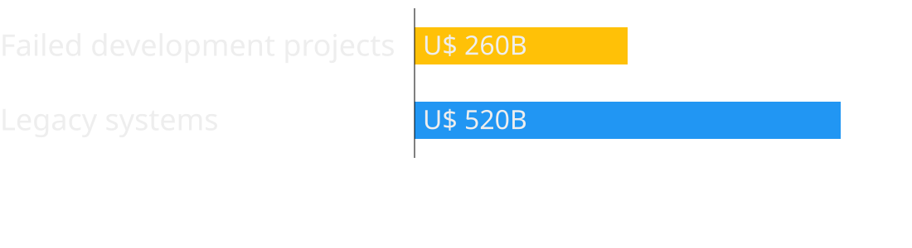
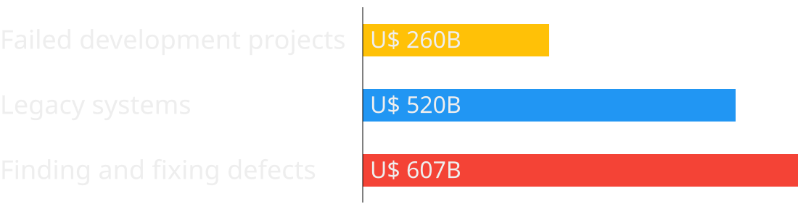
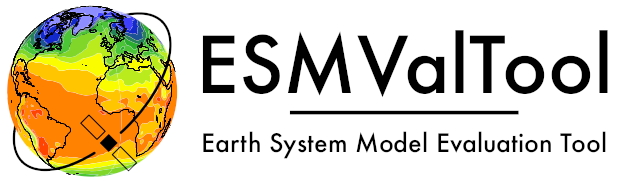
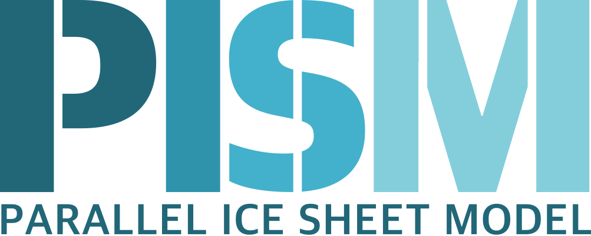
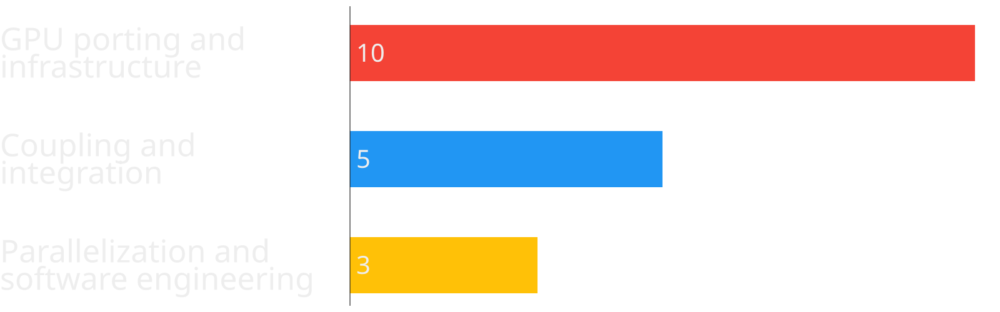

German Climate Computing Center (DKRZ)
Earth System Modelling
HPC Scientific Software
No trained software engineers
Organic development
Software seen only as a tool
Understaffed institutions
Software quality costed the US economy U$ 2.41 Trillions in 20221


Wrong and failed experiments
User support
Fixing bugs
Complex code
Technical debt
Longer onboarding
Excessive systems costs
Lost research opportunities
Improving technical infrastructure to serve Science
6 months projects (sprints)
Well-defined goals and timeline


And more…

Parallelization
with MPI
Coupling
with ICON
Versionining
Releases
Git workflows
CI/CD
A simple framework to list software quality deficiencies
Evaluation produces a score for the model
List of actionable items that can be worked on during a sprint
Tests
CI
Poorly named variables
Unreachable code
No comments
Poor software quality has large hidden costs
natESM has improved many models with its sprints
We are introducing a software quality evaluation framework to assess and further improve models